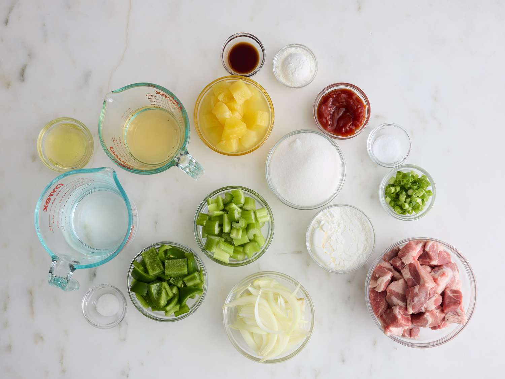
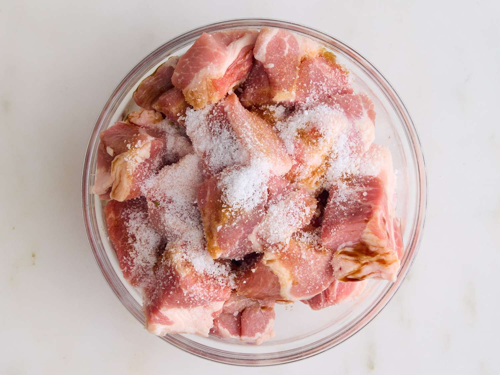
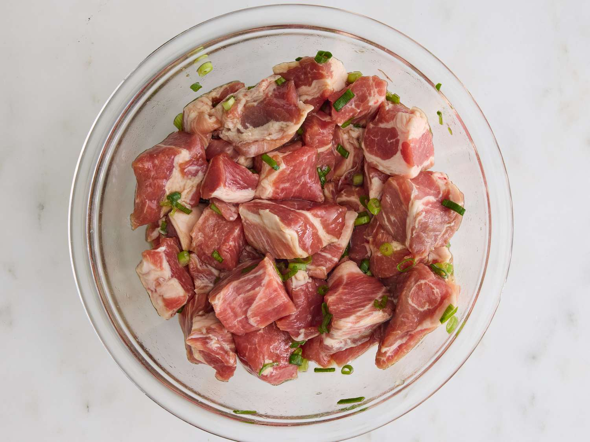
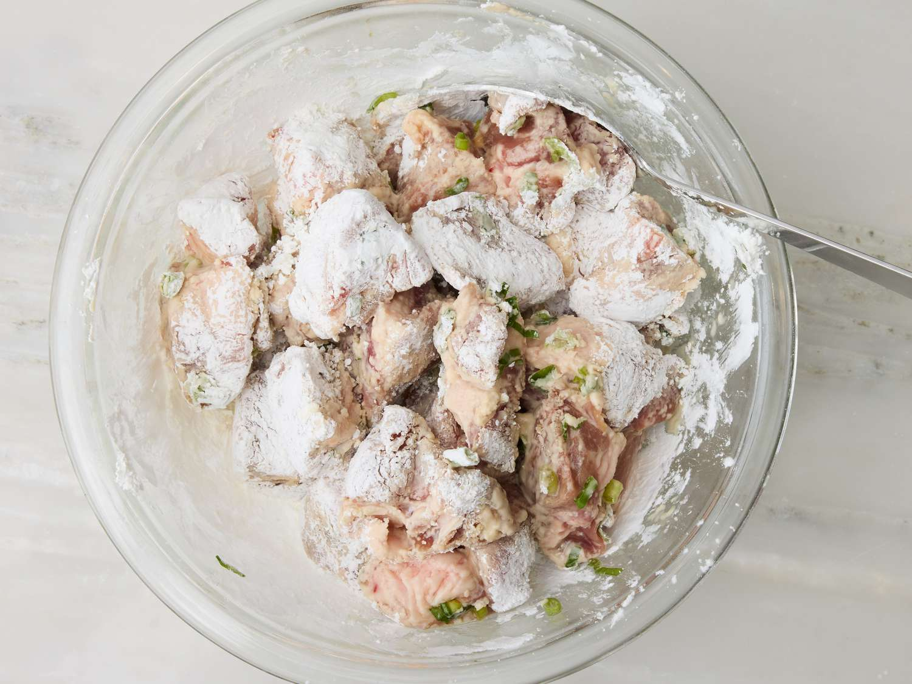
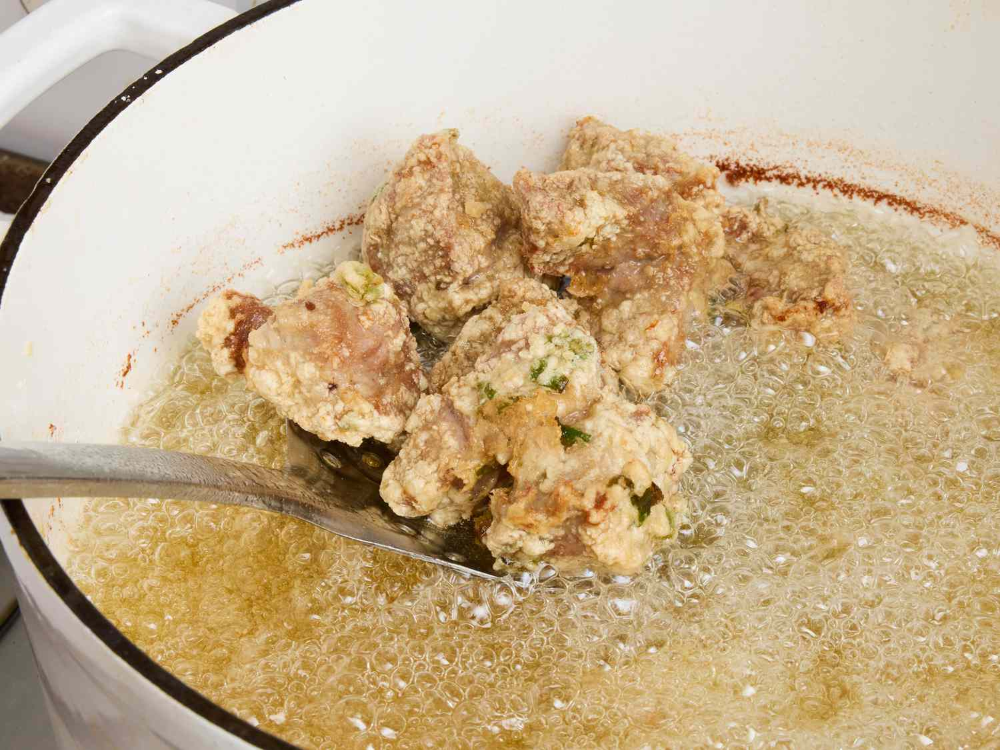
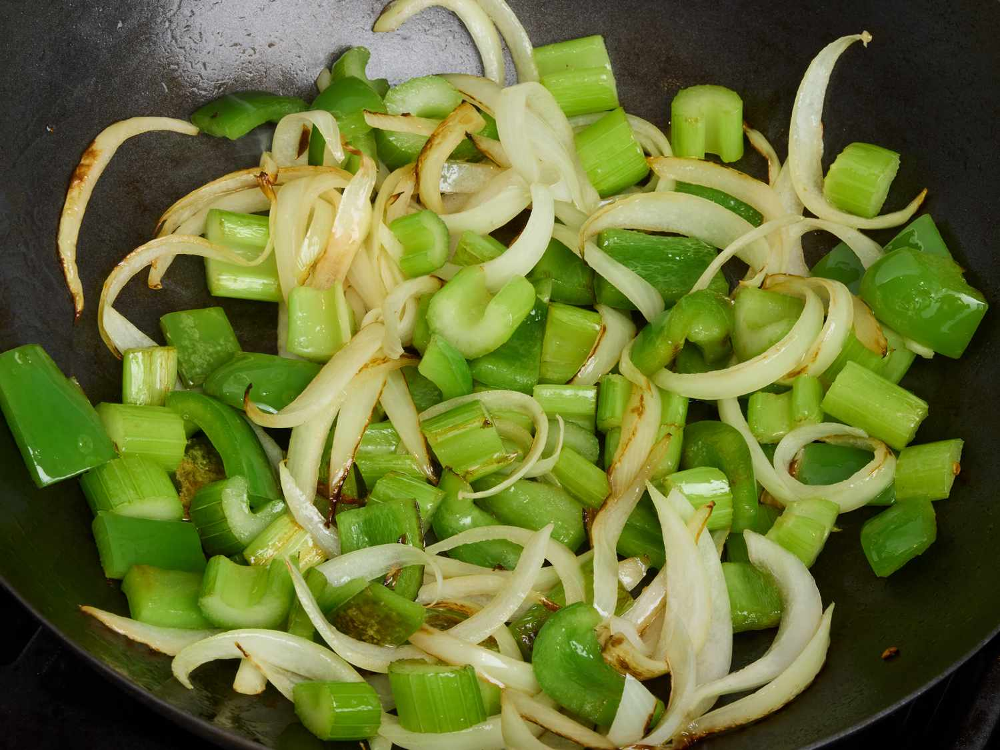
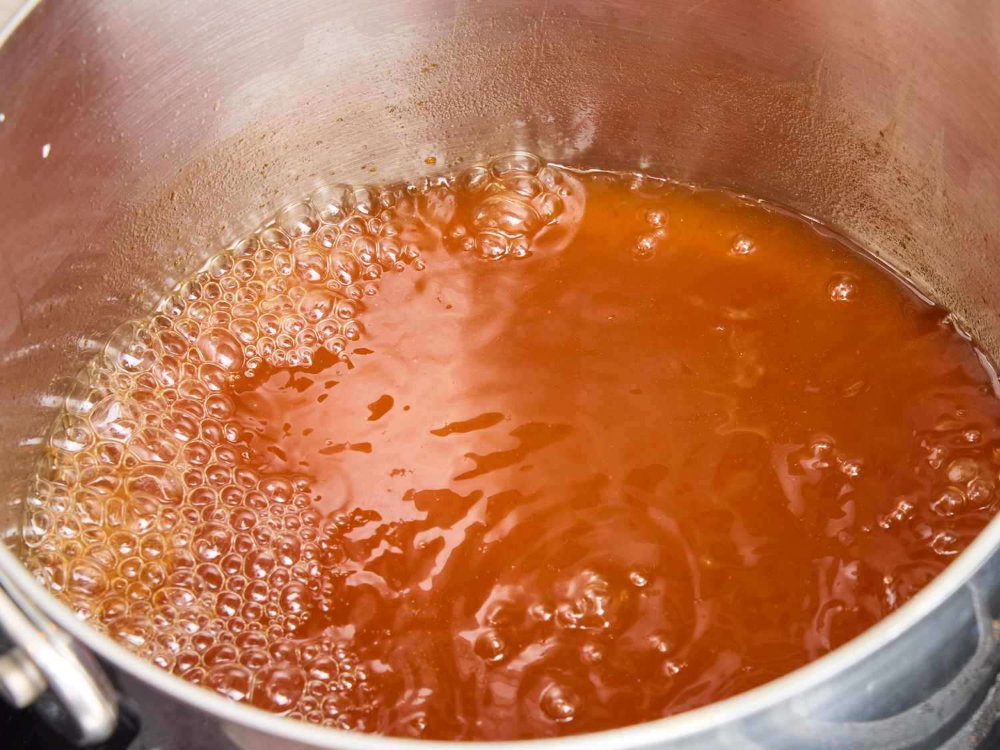
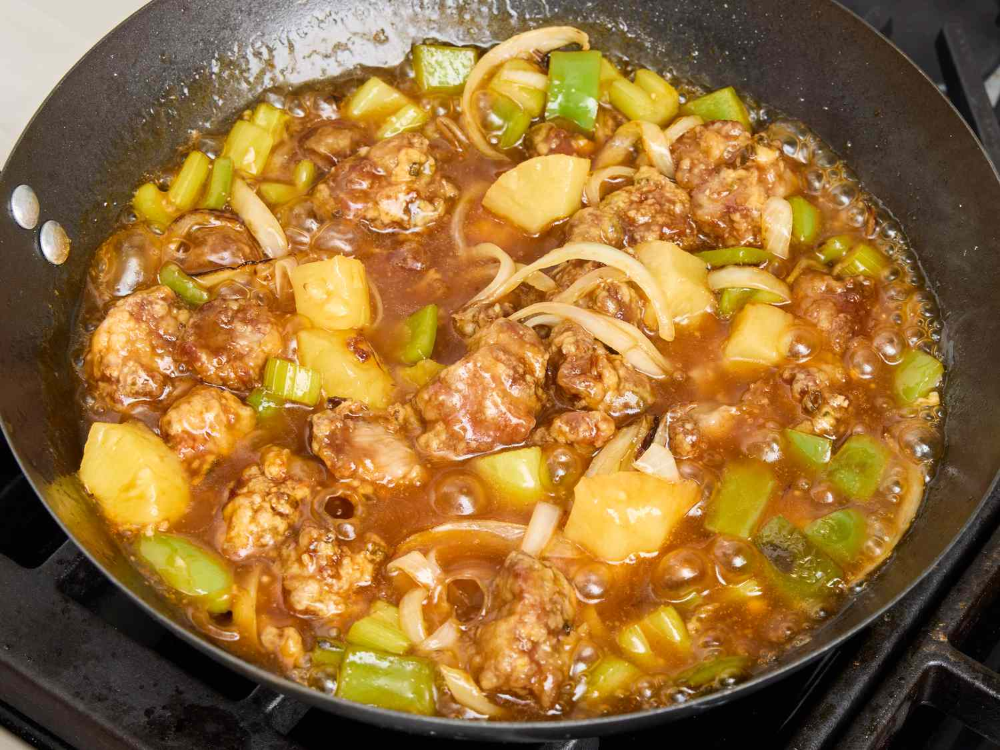

Sweet and Sour Pork is a classic Chinese-American dish known for its bold, tangy flavor and vibrant colors. It's a balance of sweet, sour, and savory elements, with crispy pork pieces coated in a glossy, flavorful sauce. It’s a popular takeout favorite and a staple at many Chinese restaurants.
Ingredients
Marinade
1 teaspoon soy sauce
1 teaspoon salt
1/4 teaspoon white vinegar
1 egg white
2 green onions, chopped
Frying
1 quart vegetable oil for frying
1/2 cup cornstrach
Stir-Fried Vegetables
1 tablespoon vegetable oil
3 stalks celery, cut into 1/2 inch pieces
1 medium green bell pepper, cut into 1 inch pieces
1 medium onion, cut into wedges
1 pinch white sugar
salt to taste
1 1/4 cups water, divided
3/4 cups white sugar
1/3 cup apple cider vinegar
1/4 cup ketchup
1/2 teaspoon soy sauce
1/4 teaspoon salt
1 (8 ounch) can pineapple chunks, undrained
2 tablespoons cornstarch
Directions

Gather all ingredients.

Place cubed pork in a medium bowl and season with soy sauce, salt, and sugar for marinade.

Add egg white and green onions and mix until well-combined. Cover and place in the refrigerator for at least 1 hour.

Heat 1 quart oil to 365 degrees F (185 degrees C) in a large, heavy saucepan or deep fryer. Coat pork with cornstarch.

Fry in hot oil until evenly browned, about 10 minutes. Drain on paper towels and set aside.

Heat oil for vegetables in a wok over medium heat. Stir in celery, bell pepper, and onion; cook until tender, about 5 minutes. Season with pinch of sugar and salt. Remove from heat and set aside.

Mix 1 cup water, 3/4 cup sugar, apple cider vinegar, ketchup, soy sauce, and salt in a large saucepan; bring to a boil over high heat.

Stir in cooked pork, celery mixture, and pineapple chunks with juice.
Return to a boil, then mix in remaining 1/4 cup water and cornstarch. Cook until thickened and warmed through, about 2 minutes.